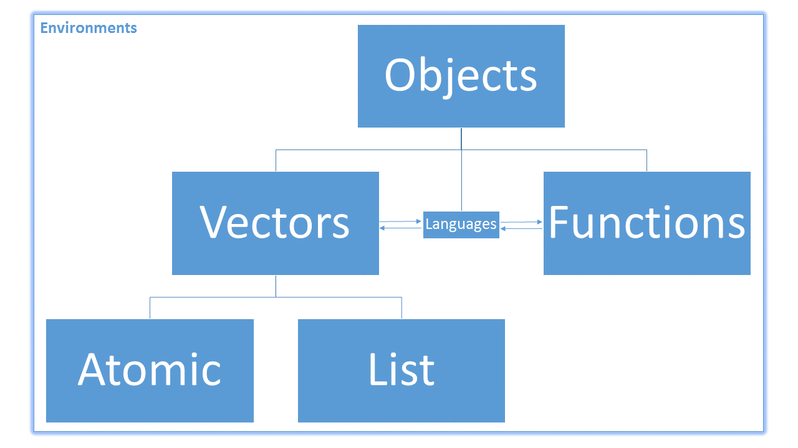

weight_g <- c(50, 60, 65, 82)
weight_g[1] 50 60 65 82What did we learn last class?
First of all, I’d like to acknowledge the Data Carpentry instructors for the “R for Ecology” lesson. We worked on updating that lesson back in 2018, so I did not write all of this lesson by myself. In this lesson, we will cover the following:
Recall that everything in R is an object. The objects in R are broken up primarily like this:

Also, because R is a vectorised language, most non-function objects we encounter are vectors. Vectors in R are broken into two main types: atomic and non-atomic. Atomic vectors mean that all of the elements in the vector have the same type or class. Non-atomic vectors are everything else. So far, almost every object you have created yourself has been an atomic vector, whether you knew it or not. Some of the more complex data objects you have encountered (such as the mpg data set from the ggplot lesson) have been non-atomic.
In our previous sessions, we have talked about atomic vectors without ever defining them.
Atomic vectors are vectors such that each element in the vector shares a common type / class.
We can assign a series of values to a vector using the c() function. For example we can create a vector of animal weights and assign it to a new object weight_g:
weight_g <- c(50, 60, 65, 82)
weight_g[1] 50 60 65 82A vector can also contain characters:
animals <- c("mouse", "rat", "dog")
animals[1] "mouse" "rat" "dog" Rembember that the quotes around “mouse”, “rat”, etc. are essential here. Without these quotes, R will assume there are objects named mouse, rat, and dog. Unless these objects exist in the Global Environment or some of the other environments you have loaded (they shouldn’t), you will get an error message.
animals <- c(mouse, rat)Error in eval(expr, envir, enclos): object 'mouse' not foundYou can also use the c() function to add other elements to one of your existing vectors:
# add to the end of the vector
weight_g <- c(weight_g, 90)
# add to the beginning of the vector
weight_g <- c(30, weight_g)
weight_g[1] 30 50 60 65 82 90In the first line, we take the original vector weight_g, add the value 90 to the end of it, and save the result back into weight_g. The second time, we add the value 30 to the beginning, and again save the result back into weight_g. While we can do this over and over again to grow a vector, there are usually better ways to make a bigger vector (more on this in our lesson on functions).
When you execute the code animals <- c(mouse, rat), R returns an error complaining about the object mouse but not rat. Why?
The basic atomic classes in R (in order of complexity) are
logical: This is the most basic type of information that can be stored in R. A vector with elements of class logical is a vector of only TRUE or FALSE values.integer: This is the second-most basic type of information. An integer vector is a vector of positive or negative counting numbers (and 0).numeric: This is the class for the Real numbers in R. Any object of class integer is necessarily also an object of class numeric, but the reverse is not true.complex: This class allows us to represent complex numbers (real and imaginary parts; e.g., 1 + 4i). In the health sciences, we won’t use objects of this class very often, if ever.character: This is the most complex class of atomic information. This class ensures that the information you type into R stays marked with the keystrokes you typed to enter it. Therefore, "10" is not recorded as the integer 10, or the real number 10.000000…, but rather the combined keystrokes of the “1” and “0” keys on your keyboard (to be very technical, “1” and “0” are stored with the ASCII code 049 and 048, respectively, or perhaps as a UTF-8 encoded value).There is one other class below logical in complexity: raw. It measures bits of computer information. We will not use objects of this class.
We can create a vector of ages and a vector of names for me and my siblings.
ages_int <- c(31, 29, 27, 25, 23, 21)
names_char <- c(
"Gabriel", "Britni", "Michael", "Christiana", "Olivia", "Hannah"
)
ages_int[1] 31 29 27 25 23 21Let’s consider another example. Suppose we need to create an electronic ID card for ourselves. What information could we put on the ID? We want things like our name, our age, where we live, etc. The medical school wants to know where we’re from, our highest degrees earned, and how long we’ve worked here. We can create a vector with all of this information:
# Build the vector
DrGabriel <- c(
"Odom", "Gabriel", "PhD, ThD", 31, "Pembroke Pines", "FL", "TX", 2.1
)
# Inspect the Vector
DrGabriel[1] "Odom" "Gabriel" "PhD, ThD" "31"
[5] "Pembroke Pines" "FL" "TX" "2.1" My time employed, 2.1, is now in quotes. Why?
Now that we have a few vectors to store our information, we want some method to extract information from a vector.
The main idea of positive position subsetting is you ask for the positions of the atomic vector based on what you want to keep.
To extract the third element of an atomic vector:
names_char[3][1] "Michael"Remember that everything in R is an object. The bracket, [, is an object—specifically a function: it takes in the position of the element of the vector and returns the contents at that position.
To extract more than one element at once by position, we subset the vector by an atomic vector of integers. To extract names of the first and third sibling:
names_char[c(1, 3)][1] "Gabriel" "Michael"Extract the names of my sisters. Extract their ages from the ages_int vector.
The main idea of negative position subsetting is you ask for the positions of the atomic vector based on what you want to discard. That is, we specify which entries we don’t want. We specify the elements we don’t want with the negative sign.
To remove my oldest sister’s name from the names_char (the second name in the vector), we subset the vector with a -2.
names_char[-2][1] "Gabriel" "Michael" "Christiana" "Olivia" "Hannah" Remove me and my brother’s names from the names_char vector. Where did you have to put the negative sign? Could you put it somewhere else?
The main idea of logical or Boolean subsetting is to answer TRUE or FALSE to whether or not you would like to keep a set of values from the atomic vector. The other methods had you specify the vector element(s) you would like to keep or the vector element(s) you would like to discard. However, the Boolean subsetting method has you create a logical vector of the same length as dimension you are interested in subsetting over, and passing it through the [ function.
Recall that logical values in R are represented by the reserved symbols TRUE and FALSE. Here is a nice picture (shamelessly borrowed from R for Data Science). 
There are three logical operators we will commonly employ: AND, OR, and NOT.
x <- TRUE
y <- FALSE
# OR: Are either x or y TRUE?
x | y [1] TRUE# AND: Are both x and y TRUE?
x & y [1] FALSE# NOT: What is the opposite of x?
!x [1] FALSEThere are two more operators to think about, but they are shorthands for the primary three.
The XOR operator asks “are x or y TRUE, but not both?”
(x | y) & !(x & y)[1] TRUExor(x, y)[1] TRUEThe set membership operator is %in%; it is one of the “infix” operators, like + or -, because it sits “in” between its two arguments. It checks if a value is included in a set of values.
A <- 2
A == 1 | A == 2 | A == 3[1] TRUEA %in% c(1, 2, 3)[1] TRUEBefore we move on to the specific vector-type examples, it is helpful to have a function to repeat values. If you would like to create a vector of six TRUE values in a row, we can use the rep() function.
rep(TRUE, times = 6)[1] TRUE TRUE TRUE TRUE TRUE TRUEWe can combine this with the c() function for very powerful results.
c() function with the rep() function to repeat the vector TRUE, FALSE, FALSE four times.rep() function to create the vector below:1 1 1 1 1 2 2 2 2 2 3 3 3 3 3 4 4 4 4 4 5 5 5 5 5rep() function:1 2 2 3 3 3 4 4 4 4 5 5 5 5 5We want to keep the ages for every other child starting after me:
ages_int[1] 31 29 27 25 23 21ages_int[rep(c(FALSE, TRUE), times = 3)][1] 29 25 21rep() function to extract the last three ages.How can we make our ID vector better? Well, we have discussed what these fields are, but we haven’t formally named them. Let’s do that:
# Re-build
DrGabriel <- c(
Surname = "Odom",
FirstName = "Gabriel",
HighestDegrees = "PhD, ThD",
Age = 31,
City = "Pembroke Pines",
State = "FL",
MovedFrom = "TX",
timeEmployed = 2.1 # since Aug 2017
)
# Inspect
DrGabriel Surname FirstName HighestDegrees Age
"Odom" "Gabriel" "PhD, ThD" "31"
City State MovedFrom timeEmployed
"Pembroke Pines" "FL" "TX" "2.1" What if I want my employment in years instead of months?
DrGabriel[8] * 12Error in DrGabriel[8] * 12: non-numeric argument to binary operatorWe immediately see an error: non-numeric argument to binary operator. What caused this? R says my age is non-numeric, but we clearly typed a number. What’s going on?
Create an ID vector with the same components as mine for yourself and your neighbour.
In order to answer these questions, we need to use some helper functions. There are many functions that allow you to inspect the contents of a vector. The error above tells us that one of the values in DrGabriel[8] / 12 is non-numeric. We can use the class() function to tell us what type of information is stored in DrGabriel[8]. One other function you can use is typeof(). This function measures how objects are stored in R’s allocated memory. For most of the atomic vectors, these are identical.
class(DrGabriel[8])[1] "character"typeof(DrGabriel[8])[1] "character"Objects of the class numeric have two storage modes (as returned by the typeof() function). What are they? What do you think these names mean, and how might they be related to the storge mode (how the computer stores objects)?
length() tells you how many elements are in a particular vector:
length(weight_g)[1] 6length(animals)[1] 3The function str() provides an overview of the structure of an object and its elements. This is one of the most useful R functions you can learn, but it really shines when working with large and complex (non-atomic) objects. We will cover those next lesson.
str(DrGabriel) Named chr [1:8] "Odom" "Gabriel" "PhD, ThD" "31" "Pembroke Pines" "FL" ...
- attr(*, "names")= chr [1:8] "Surname" "FirstName" "HighestDegrees" "Age" ...str(animals) chr [1:3] "mouse" "rat" "dog"We see that when we created the DrGabriel vector, the numeric age and tenure information was promoted to have class character. When we included both numeric and character information in the same atomic vector, R coerced the numeric information to match the type of information with the highest complexity (the characters). If you ever try to “mix” object of different complexities in an atomic vector, the elements of lower complexity will be “promoted” by force to match the highest complexity level. This is because basic vectors in R must be atomic: all elements they contain must have the same class. For example:
class(TRUE)[1] "logical"class(c(TRUE, 1L))[1] "integer"class(c(TRUE, 1L, 2.1))[1] "numeric"class(c(TRUE, 1L, 2.1, "yeeeeeaaaaaaaaaaaahhhhhhhh"))[1] "character"Recall the logical operators. Explain R’s results for the following:
1 == TRUE"1" == TRUE1 == "1"!1!0Hint: it may be helpful to combine some of these values into a single vector in order to see how R coerces their classes.
Recall the ID vector and the vector of animal names:
DrGabriel <- c(
Surname = "Odom",
FirstName = "Gabriel",
HighestDegrees = "PhD, ThD",
Age = 31,
City = "Pembroke Pines",
State = "FL",
MovedFrom = "TX",
timeEmployed = 2.1
)
animals <- c("mouse", "rat", "dog")Did you notice anything different between these two object structures when we looked at them earlier?
str(DrGabriel) Named chr [1:8] "Odom" "Gabriel" "PhD, ThD" "31" "Pembroke Pines" "FL" ...
- attr(*, "names")= chr [1:8] "Surname" "FirstName" "HighestDegrees" "Age" ...str(animals) chr [1:3] "mouse" "rat" "dog"The ID object was created with named vector elements. Those names are stored by R in the attributes of the object. Attributes are how R allows us to attach additional metadata to our vectors.
We use the attributes() function to find out what the attributes of an object are.
attributes(animals)NULLattributes(DrGabriel)$names
[1] "Surname" "FirstName" "HighestDegrees" "Age"
[5] "City" "State" "MovedFrom" "timeEmployed" Currently, the attributes of the animals object is NULL (this is how R describes something that is completely empty; this is not the same as R’s missing data tag, NA, that we saw earlier). However, the attributes of the DrGabriel object is not empty. In fact, it is a new type of data structure called a list that we will discuss in the next lesson.
Find the structure of the attributes of your ID vector.
One cool thing about attributes is that you can create your own at any time. Let’s create a playing card object. We want the value of the object to be a single number, but we want the attributes to mark the suit of the card.
We can create or edit attributes with the attr() function. This function uses a special form of the assignment syntax. We have seen objectName <- value before. For attributes, we have to use a modified syntax because they are part of another object
card <- 2
attr(card, "suit") <- "hearts"
card[1] 2
attr(,"suit")
[1] "hearts"This code says to assign the character "hearts" to a container named "suit" that is itself contained entirely within another object, the object card.
1L and 1. What does the L do?One of the ways that R makes new classes available to you is by giving a normal atomic object a new set of attributes.
Let’s make a vector of two pairs of names:
superheroes <- c(
"Wonder Woman", "Green Lantern", "Superman", "Diana Prince", "Alan Scott",
"Clark Kent"
)You may be wondering why Wonder Woman’s name isn’t paired with her alias (Diana Prince). We will fix that momentarily.
What is the current class and type of this vector?
class(superheroes)[1] "character"typeof(superheroes)[1] "character"One of the special attributes that R objects can have is dimension. We can set the dimension of our superheroes vector by:
attr(superheroes, "dim") <- c(3, 2)
superheroes [,1] [,2]
[1,] "Wonder Woman" "Diana Prince"
[2,] "Green Lantern" "Alan Scott"
[3,] "Superman" "Clark Kent" Notice that adding a dimension attribute to a character vector puts the same data into a rectangular form. What is the class of this vector now?
class(superheroes)[1] "matrix" "array" typeof(superheroes)[1] "character"We can then see that many of the more exotic types of data are simple atomic types with additional attributes. In R, matrices are just atomic vectors with a dim attribute.
Look in the help file for the attr() function. What are some of the other “special” attributes that might change how R treats an atomic vector?
The main idea of named subsetting is you ask for the sub-elements of the vector corresponding to the names you want to keep.
First of all, in order to subset an atomic vector by its names, the vector elements need names. Recall that the names of an atomic vector are stored as an attribute. Also recall that the names attribute is one of the special attributes that R uses to influence the class of an object (check the help file for the attr() function to refresh your memory). As such, we can use the names() function directly to access or set the names of a vector.
Let’s add the sibling names vector as the names of the ages_int vector:
names(ages_int) <- names_char
ages_int Gabriel Britni Michael Christiana Olivia Hannah
31 29 27 25 23 21 Now that we have a named atomic vector, we can extract my age:
ages_int["Gabriel"]Gabriel
31 What if we didn’t want my age. Can we use negative subsetting by name with the [ function?
ages_int[-"Gabriel"]Error in -"Gabriel": invalid argument to unary operatorRemember that everything in R is an object. The - sign is an object, specifically a function. When the - function is used with two arguments, like 5 - 2, it is called a binary operator (because it takes in two objects, the 5 and the 2). When the - function is used with one argument, like -2, it is called a unary operator (because it takes in only one argument). This error says that a character string cannot be the argument of the - function.
Extract the ages of the oldest and youngest siblings (Gabriel and Hannah).
There is one other class of atomic vector in R that bears mentioning, but it can be difficult to use: the factor. Objects of class factor are technically just objects of class integer with an added attribute named levels. That is, factors are integer vectors with character labels. Here’s an example. Let’s say that the medical school only cares about a few types of doctoral degrees: ScD, PhD, DrPH, JD, MD, MBBS, DO, or DNP. For an atomic vector of doctoral degrees, we may want to create a vector that includes the possible options to pick from. As such, factors can be useful for categorical data.
We create factors directly with the factor() function. For example, if I wanted to create a factor vector to include my PhD for the medical school records, I would use this code:
myDegree <- factor(
"PhD", levels = c("ScD", "PhD", "DrPH", "JD", "MD", "MBBS", "DO", "DNP")
)
myDegree[1] PhD
Levels: ScD PhD DrPH JD MD MBBS DO DNPWhat if I wanted to include my ThD?
factor(
"ThD", levels = c("ScD", "PhD", "DrPH", "JD", "MD", "MBBS", "DO", "DNP")
)[1] <NA>
Levels: ScD PhD DrPH JD MD MBBS DO DNPThe <NA> says that I have not supplied a degree that matches the list of doctoral degrees (hypothetically) approved by the medical school. This NA is R’s way of saying that my doctoral degree is missing (we will talk more about how R handles missing data in the next section).
As we discussed earlier, factors are integers with character labels. This means that the factor I created above prints as a character vector, but it isn’t.
class(myDegree)[1] "factor"typeof(myDegree)[1] "integer"We saw above that the factor I made masquerades as a character, but it isn’t. This is one of the reasons that I don’t like using factors. Another reason is because they can exhibit strange properties.
c(myDegree, "BS"). What happened? Does this surprise you?myDegree against "PhD" (you may have to check your notes to remind yourself how to do that).factor() function. Do you see anything to explain why the logical comparison functions work differently?factor(c("MPH", "PhD")) == "PhD"
factor(c("MPH", "PhD")) == factor("PhD")DrGabriel named ID vector, your own ID vector, the names_char and ages_int vectors, and the matrix of super heroes.Missing values in R are represented by NA: not -999, ?, " ", ".", or even NaN. When you import any data into R, pay attention to the missing value codes from other data analysis software. R treats missing values (the NAs) as a statement saying “I don’t know”. Also, understand that missing values are “contagious” in R. Here are some examples:
NA < 3 # Is something I don't know less than 3? I don't know.[1] NANA * 2 # What is "I don't know" multiplied by 2? I don't know.[1] NANA & TRUE # Are these both TRUE? I don't know.[1] NANA | TRUE # Are either of these TRUE? Yes, one of them is TRUE.[1] TRUENA == NA # Is something I don't know equal to something else I don't know? I don't know.[1] NAis.na(NA) # Is this something we don't know? Yes.[1] TRUEBecause there are multiple types of atomic data, there are technically multiple types of NA. They all start with NA.
NA: This is the missing value marker for a logical vector.NA_integer_: This is the missing value marker for an integer vector.NA_real_: This is the missing value marker for a double vector. Remember that numeric vectors have two types: integer or double. This missing value breaks with the naming convention, but I don’t know why.NA_character_: This is the missing value marker for a character vector.Confirm with both the typeof() and class() functions that these missing values have the types and classes that they should.
There are some times that the results of a function are mathematically “missing” (I am putting this word in quotes because it’s not true; the values aren’t missing, people just think they are). For instance, from algebra we remember that anything divided by 0 does not exist. It’s not that this value is “missing”, it’s that this value cannot exist by definition.
Here is how R handles special arthimetically-induced “missingness”:
log(-1)[1] NaN1 / (0 ^ 2)[1] Inf-1 / (0 ^ 2)[1] -InfMost computer languages differ in how they handle the quantity 1 / 0. R, Mathematica, and FORTRAN treat it as Inf; C++ treats it as a “floating point exception”; Python has a special class of results to handle these cases called a ZeroDivisionError; SAS issues a warning and replaces the value with the missing value symbol, .. Overall, you shouldn’t be dividing by 0 very often, but just be aware that these exceptions in computer arithmetic can trip you up.
We will cover non-atomic vectors in the next lesson, but I want to give a brief comment about the NULL value we saw earlier. Because non-atomic vectors are defined by what behaviour they don’t show, it’s nearly impossible to list all of the types on non-atomic vectors. It would be like trying to define the idea of “cold” without having any idea of what “warm” or “hot” means. Non-atomic vectors are what they are simply because they are not atomic.
Because of this, we use the NULL symbol to denote a missing non-atomic value. Recall the attributes of an atomic vector:
# With Attributes
x1 <- c(height = 73)
attributes(x1)$names
[1] "height"# Without Attributes
x2 <- 73
attributes(x2)NULLWhat is the difference between these two? Recall that attributes are stored as a list, making them non-atomic. Therefore, when attributes are missing or empty, R treats them as NULL. Again, don’t worry so much about this yet, because the next lesson is all about lists (non-atomic data).